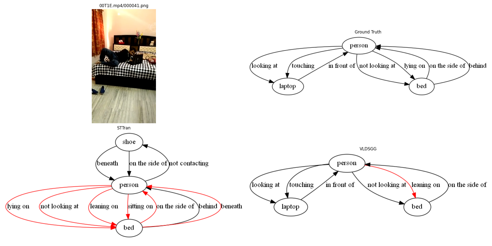
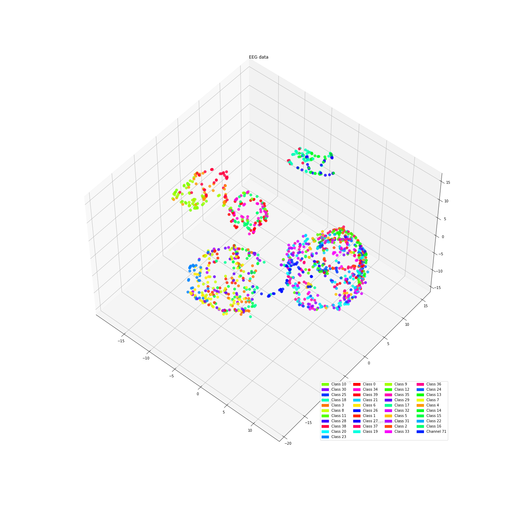
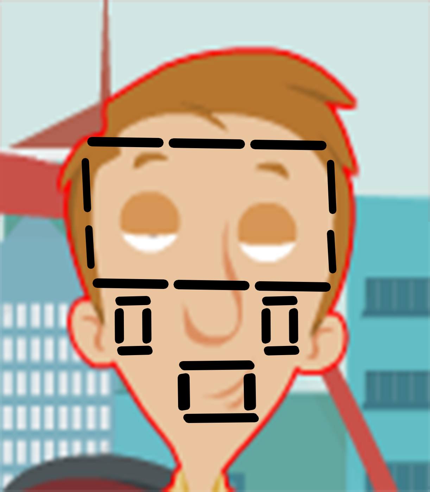

Projects

Dynamic Scene Graph Generation(DSGG)
Use Multi-Modal Large Language Models for generating DSG, zero-shot as well as finetuning

DistilledDino
Distilled DINO models to smaller efficientnets and VITs for efficient inference.
RetailEye
Built a real-time customer behavior analysis system using YOLO and OpenCV, preventing self checkout theft.

EEG Visual Stimuli
EEG research is my passion. I'm resrarching how we can interpret our brain singals that can read our thoughts and visulize our dreams. I have developed algorithms to convert EEG signals into visual representations for brain-computer interfaces.

Drunk and Drowsiness Alert System(DADAS)
Implemented a drunk and drowsiness alert system for long route drivers for monitoring and safety purposes.